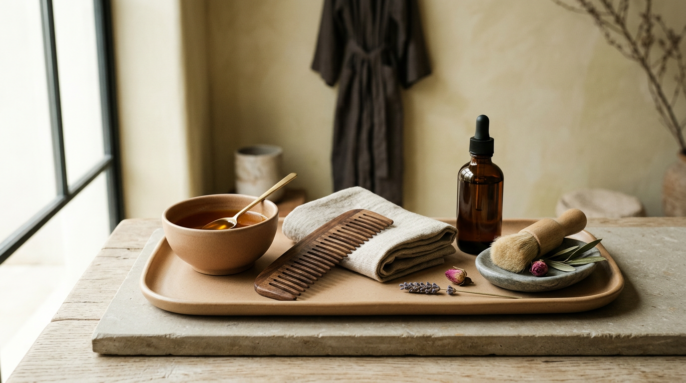
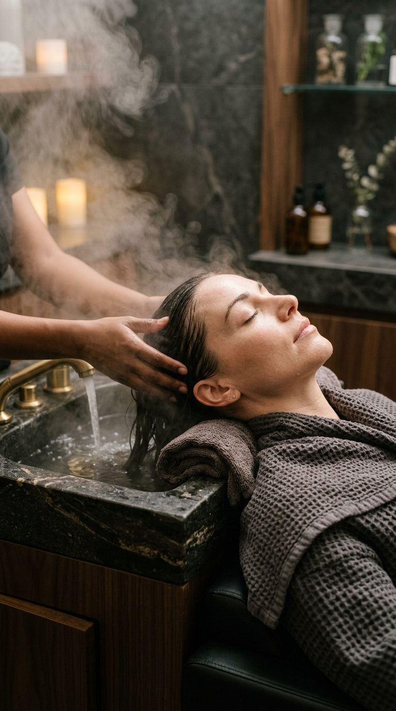
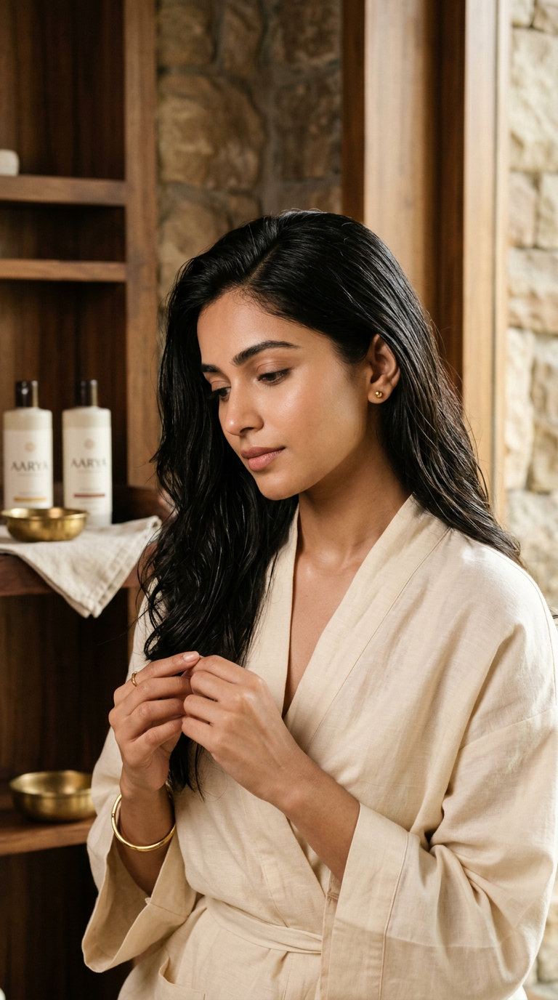
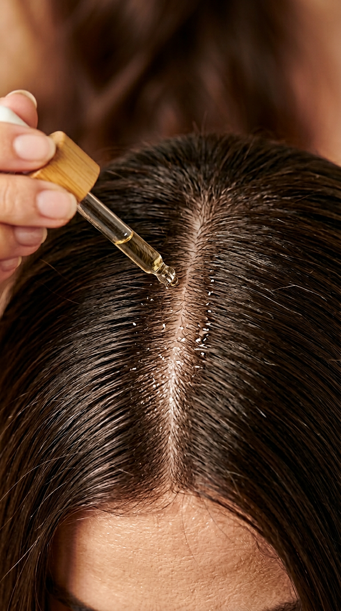
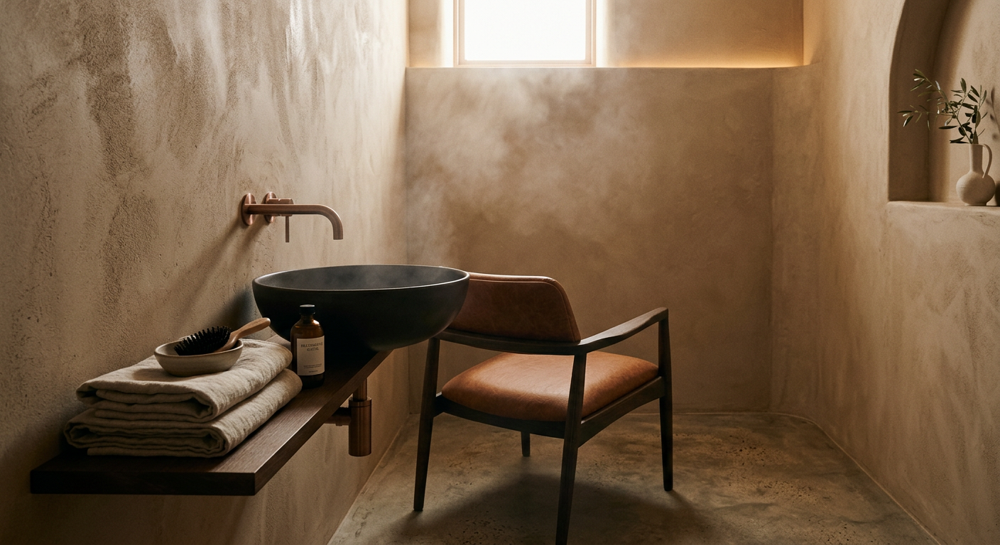
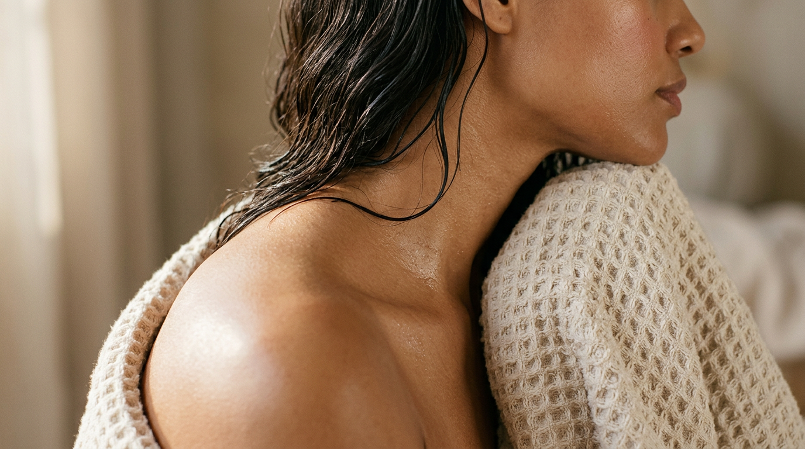
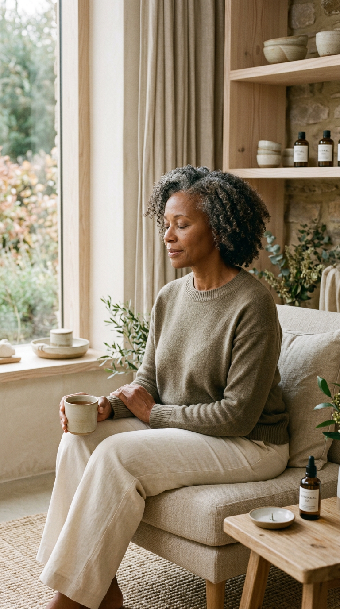
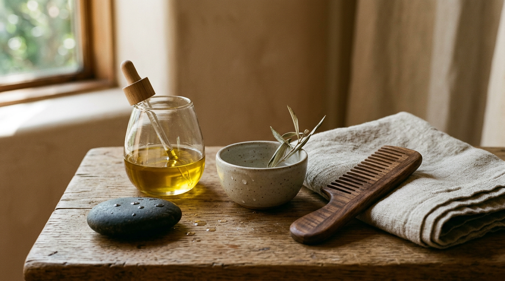

World 10
The Hair Ritualist
Sacred practice. Meditative pacing.
Restorative ceremony for scalp and soul.
Restoration
as Ritual
Every strand tells a story. Every scalp holds tension. We approach hair care not as maintenance, but as ceremony — a deliberate, unhurried practice of restoration.
Our philosophy draws from ancient scalp massage traditions, modern trichology, and the simple truth that healing requires presence. No rushing. No shortcuts. Only intention.

The Sacred
Sequence
Oil Anointing
Warm botanical oils applied in slow, deliberate circles. Rosemary, cedarwood, and argan meet the scalp in quiet ceremony.
Pressure Mapping
Twelve points across the cranium. Ancient marma points meet modern pressure therapy. Tension dissolves in waves.
Steam Veil
Warm herb-infused steam envelops the head. Cuticles open. The scalp breathes. Product absorption deepens tenfold.

Seal & Rest
Cold-pressed sealant locks moisture within. A final blessing of touch. The ritual closes as it began — with stillness.
Ritual
Visions

Anointing



Begin Your
Ritual
The ceremony awaits. Reserve your session and discover what sacred care can restore.
Hair health is not a quick fix.
It is a relationship, a ritual, a return.
The Hair Ritualist — where restoration becomes ceremony.
